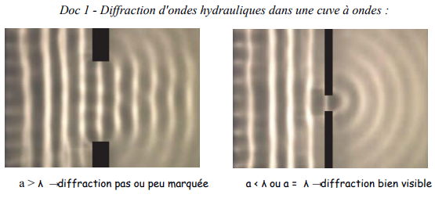
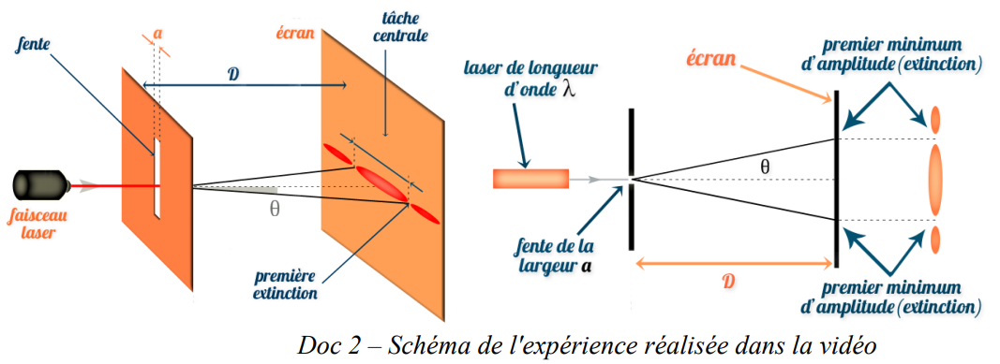
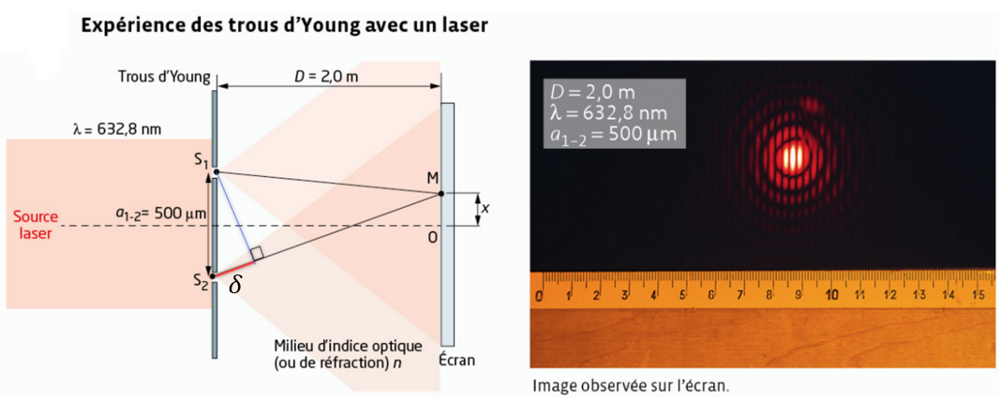
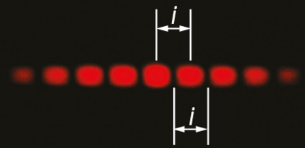

Définition
La diffraction est un phénomène physique correspondant à la modification de la direction de propagation d'une onde au passage d'une petite ouverture ou d'un petit obstacle.
Dans une cuve à ondes, on envoie des ondes rectilignes sur un obstacle percé d'une ouverture de largeur a. Le comportement de l'onde dépend du rapport entre a et la longueur d'onde λ.

λ, diffraction peu marquée ; à droite a < λ ou a = λ, diffraction bien visible.">Observations
- Le phénomène de diffraction ne modifie pas la fréquence ni la longueur d'onde de l'onde.
- La diffraction dépend de la longueur d'onde λ de l'onde incidente et de la dimension a de l'ouverture ou de l'obstacle ; le phénomène est d'autant plus marqué que a est voisin ou inférieur à λ.
On envoie un faisceau laser de longueur d'onde λ sur une fente fine de largeur a. Sur un écran placé à une distance D, on observe une tache centrale lumineuse, large et intense, entourée de taches secondaires plus faibles, séparées par des extinctions (zones sombres).

Observations
- L'onde diffractée présente des maximas et des minimas (extinctions) d'amplitude.
- Plus la largeur a de la fente diminue, plus la largeur ℓ des taches augmente.
🧪 Application — Simulation de diffraction et interférence
Manipule l'animation ci-dessous (Adrien Willm — ostralo.net) : choisis « Une fente » ou « Deux fentes », puis fais varier la longueur d'onde, la largeur des fentes et la distance à l'écran pour observer l'effet sur la figure obtenue.
🔬 Investigation guidée — retrouve la relation entre θ, λ et a
Sur la simulation, choisis le mode « Une fente ». Règle une distance écran D et une longueur d'onde λ, note leurs valeurs, et ne les modifie plus pendant cette étape. Fais varier la largeur a de la fente sur toute la plage disponible du curseur (4 valeurs différentes) et, à l'aide de la règle de la simulation, mesure à chaque fois la distance x entre le centre de la tache centrale et la 1ère extinction.
| a (µm) | x mesuré (cm) | θ ≈ x/D (auto, rad) | a × θ (auto) |
|---|---|---|---|
Fixe maintenant une largeur de fente a et une distance écran D, note leurs valeurs. Fais varier λ sur toute la plage disponible (4 valeurs) et mesure à chaque fois la distance x entre le centre et la 1ère extinction.
| λ (nm) | x mesuré (cm) | θ ≈ x/D (auto, rad) | θ / λ (auto) |
|---|---|---|---|
Relation de l'angle caractéristique de diffraction
Pour une onde de longueur d'onde λ traversant une ouverture de largeur a, l'écart angulaire θ (en rad) vérifie :
Lien avec la largeur de la tache centrale
L'écart angulaire étant très faible, on peut confondre tan θ et θ (en radian). Sur un écran à une distance D de la fente, la tache centrale de diffraction a pour largeur totale L, avec :
📈 Animation interactive — Diffraction d'un faisceau laser
Fais varier la largeur a de la fente à l'aide du curseur et observe l'effet sur l'écart angulaire θ et la figure de diffraction obtenue sur l'écran (λ = 633 nm, laser hélium-néon).
✏️ Exercice — Exploitation d'un graphique θ = f(1/a)
Exercices n° 7, 12, 13, (23 résolu) et 29 p. 428 à 439.
Définition
Lorsque deux ondes monochromatiques de même nature se superposent, l'amplitude de l'onde résultante varie dans l'espace et des zones d'amplitude minimale et maximale apparaissent : c'est le phénomène d'interférence.
Conditions d'observation
Pour observer des interférences, les deux sources émettrices doivent être :
- synchrones (avoir la même fréquence) ;
- cohérentes (avoir un déphasage constant).
Une onde monochromatique peut être modélisée par une fonction sinusoïdale prenant alternativement des valeurs positives et négatives (succession de crêtes et de creux). On considère deux ondes de même longueur d'onde se superposant.
Sources secondaires cohérentes
Pour observer des interférences avec une lumière, on utilise une source primaire que l'on divise pour créer deux sources secondaires cohérentes S1 et S2 (par exemple deux fentes fines et parallèles, appelées fentes d'Young). Des franges d'interférences apparaissent alors à l'intérieur de la figure de diffraction, sur un écran.
Différence de marche
Considérons deux sources cohérentes S1 et S2, et un point P du milieu de propagation. Les deux ondes issues des sources parcourent respectivement les distances S1P et S2P avant d'arriver en P. On appelle différence de marche la quantité :

Conditions d'interférences constructives / destructives
⇒ Si la différence de marche δ est égale à un nombre entier de longueurs d'onde, les deux ondes arrivent en P en phase : leurs élongations maximales coïncident, la somme est maximale.
⇒ Si la différence de marche vaut un nombre demi-entier de longueurs d'onde, les deux signaux arrivent en opposition de phase : la somme des deux ondes est nulle.
✏️ Exercice — Nature de l'interférence
✏️ Exercice — Établir la formule de la différence de marche
Le programme ci-dessous met en œuvre la formule que tu viens d'établir pour calculer δ = S₂P − S₁P, puis en déduit la nature de l'interférence en P, pour le cas λ = 633 nm, a = 500 µm, D = 2,00 m.
Ce que tu dois faire : modifie uniquement la valeur numérique de x (en mm) dans la case surlignée ci-dessous, à la ligne x = …, puis clique sur ▶ Exécuter pour voir ce qu'afficherait le programme.
import numpy as np
lam = 633e-9 # longueur d'onde (m)
a = 500e-6 # écart S1-S2 (m)
D = 2.00 # distance sources-écran (m)
x = e-3 # position de P sur l'écran, EN MM ← À MODIFIER
S1P = np.sqrt(D**2 + (x - a/2)**2)
S2P = np.sqrt(D**2 + (x + a/2)**2)
delta = S2P - S1P # différence de marche
n = delta / lam # rapport delta/lambda
print("delta =", delta, "m")
print("delta/lambda =", n)
if abs(n - round(n)) < 0.05:
print("--> interférence CONSTRUCTIVE (frange brillante)")
elif abs(abs(n - round(n)) - 0.5) < 0.05:
print("--> interférence DESTRUCTIVE (frange sombre)")
else:
print("--> ni constructive ni destructive")
✏️ Exercice — Exploiter le programme
Pour une frange brillante, δ doit être proche d'un multiple entier de λ (n = 0, 1, 2…) ; pour une frange sombre, δ doit être proche d'un demi-entier de λ. Après chaque essai, regarde la ligne delta/lambda = … affichée dans la console : rapproche-la d'abord d'un nombre entier (pour x₁), puis d'un nombre du type n + 0,5 (pour x₂).
Comme a ≪ D, on peut estimer δ ≈ a·x/D (approximation qui sera vue dans l'onglet suivant). Cela donne un ordre de grandeur de départ pour x₁, puis x₂ ≈ x₁/2. Pars de cette estimation en mm, puis affine par petits pas avec le programme (qui calcule δ exactement, sans approximation).
Interfrange
Lors des interférences lumineuses, la distance séparant deux milieux de zones sombres consécutives (ou deux franges brillantes consécutives) est appelée interfrange i. Dans le cadre des trous d'Young, sa valeur est donnée par :
D : distance entre les sources secondaires et l'écran (m) · a : distance entre les 2 sources secondaires (m)

✏️ Exercice — Calcul de l'interfrange
Si les sources secondaires émettent de la lumière blanche, on n'observe que quelques franges colorées au centre de la figure d'interférences : ce sont les couleurs interférentielles. Les deux sources émettent plusieurs radiations de longueurs d'onde différentes, correspondant à des figures d'interférences différentes qui se superposent. Les couleurs sont mélangées car les franges de différentes couleurs se brouillent au-delà du centre.
✏️ Exercice — Pourquoi la bulle de savon est-elle colorée ?
Exercices n° 8, 20, 24, (25 résolu), 26, 35, 37 et 39 p. 428 à 439.
🧪 Simulation — Interférences d'ondes (PhET)
Choisis l'onglet « Ondes » (ou « Lumière »), passe en mode « Deux sources », et active l'affichage des « Écrans » ou de la règle pour effectuer des mesures.
✏️ Exploiter la simulation
Compare cette valeur calculée à l'écart entre deux franges que tu observes directement sur l'écran de la simulation : sont-elles cohérentes ?
Diffraction
Modification de la direction de propagation d'une onde au passage d'une ouverture ou d'un obstacle de petite taille. D'autant plus marquée que a est voisin ou inférieur à λ. Ne modifie ni f ni λ.
Angle caractéristique
θ en rad, λ et a en m. Écart angulaire entre l'axe et le milieu de la première extinction.
Conditions
Deux sources synchrones (même fréquence) et cohérentes (déphasage constant) → zones d'amplitude min. et max. dans l'espace.
Différence de marche
δ = S₂P − S₁P
- δ = n·λ ⟹ interférence constructive
- δ = (n+1/2)·λ ⟹ interférence destructive
Interfrange (trous d'Young)
i, D et a en mètre ; λ en mètre. i augmente avec λ et D, diminue quand a augmente.
- Diffraction et interférences sont deux phénomènes caractéristiques du comportement ondulatoire (mécanique ou lumineux).
- La diffraction s'observe quand la taille de l'ouverture/obstacle est voisine ou inférieure à λ ; elle ne change ni f ni λ.
- θ = λ/a : plus l'ouverture est petite, plus l'onde s'étale.
- Les interférences nécessitent deux sources synchrones et cohérentes.
- δ = n·λ → constructif (frange brillante) ; δ = (n+1/2)·λ → destructif (frange sombre).
- Interfrange : i = λD/a, mesurable dans le dispositif des trous d'Young.
- Capacité numérique : un programme Python permet de calculer la différence de marche δ = S₂P − S₁P en tout point P, puis de déterminer la nature (constructive/destructive) de l'interférence via le rapport δ/λ.
Diffraction
Modification de la direction de propagation d'une onde au passage d'une ouverture ou d'un obstacle de petite taille (voisine ou inférieure à λ) ; ne modifie ni la fréquence ni la longueur d'onde.
Angle caractéristique de diffraction θ
Écart angulaire entre l'axe de propagation et le milieu de la première extinction de la figure de diffraction : θ = λ/a, avec a la taille de l'ouverture ou de l'obstacle.
Sources synchrones
Deux sources d'ondes de même fréquence.
Sources cohérentes
Deux sources d'ondes dont le déphasage est constant au cours du temps ; condition nécessaire, avec la synchronisation, pour observer une figure d'interférences stable.
Différence de marche δ
Différence des distances parcourues par les ondes issues de deux sources pour atteindre un même point P : δ = S₂P − S₁P.
Interférence constructive
Amplification de l'onde résultante en un point où la différence de marche est un multiple entier de la longueur d'onde : δ = n·λ.
Interférence destructive
Atténuation (ou annulation) de l'onde résultante en un point où la différence de marche est un multiple demi-entier de la longueur d'onde : δ = (n + 1/2)·λ.
Interfrange i
Distance séparant deux franges brillantes (ou sombres) consécutives dans une figure d'interférences ; pour le dispositif des trous d'Young : i = λ·D/a.
▶ Cours 3 — Diffraction
▶ Cours 4 — Interférences
▶ Diffraction sur cuve à ondes
Olivier Oreggia
▶ Laser Diffraction and Interference
TSG Physics
▶ Interférences avec des ondes hydrauliques
- TP 09 — Diffraction des ondes (Fente d'Young)
- TP 10 — Interférences des ondes (SalsaJ)
- TP 11 — Interférences sonores (Python)
- Exercices n° 7, 12, 13, 23, 29 (diffraction) et 8, 20, 24, 25, 26, 35, 37, 39 (interférences), p. 428 à 439